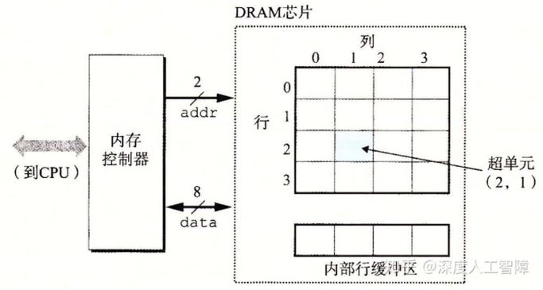
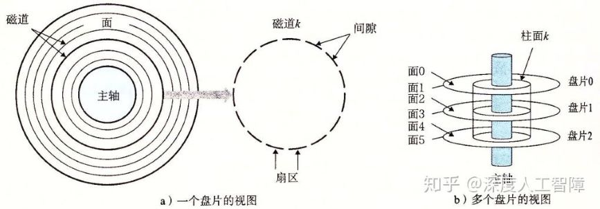
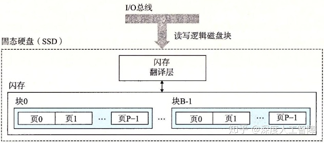
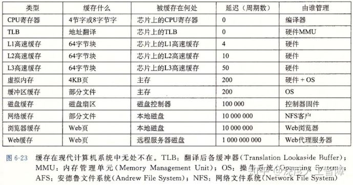
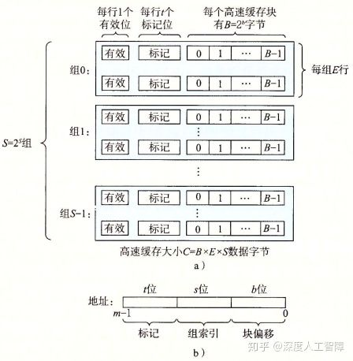
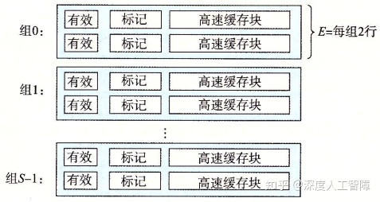

这章决定做一些简单的整理。
随机访问存储器（Random-Access Memory，RAM）可以分为两类：静态的RAM（SRAM）和动态的RAM（DRAM）。区别如下：
一些名称约定：
现在将DRAM芯片分为d个supercell，每个supercell中包含了w个cell。则称这是一个d × w DRAM芯片，存储了dw位信息。下图是一个16 × 8的DRAM芯片。

首先内存控制器通过addr引脚发送两位行地址到DRAM芯片，DRAM芯片找到该行并放入内部行缓冲区。内存控制器再发送两位的列地址，DRAM芯片找到行缓冲区的该列，并通过data引脚发送8位的数据到内存控制器。 之所以把DRAM芯片排列成矩阵的形式，是为了减少addr引脚数。如果我们把八个DRAM芯片封装到一个内存模块中，就可以一次能对64位字进行读写。
之前介绍的DRAM和SRAM在断电时都会丢失数据，所以是易失的（Volatile）。而非易失性存储器（Nonvolatile Memory）即使断电后，也会保存信息，该类存储器称为只读存储器（Read-Only Memory，ROM）。 但是现在ROM中有的类型既可以读也可以写了。ROM可以分为以下几类：
存储在ROM设备中的程序称为固件（Firmware），包括BIOS、磁盘控制器、网卡、图形加速器和安全子系统等。当计算机系统通电后，会运行存储在ROM中的固件。
磁盘（Disk）是被用来保存大量数据的存储设备，但是读信息的速度比DRAM慢10万倍，比SRAM慢100万倍。

上图所示的是一个磁盘的构造。磁盘是由多个叠放在一起的盘片（Platter）构成。每个盘片有两个覆盖着磁性记录材料的表面（Surface）。 每个表面由一组称为磁道（Track）的同心圆组成。每个磁道被划分为若干扇区（Sector）。每个扇区包含相同数量的数据位（通常为512位）作为读写数据的基本单位。 扇区之间通过间隙（Gap）分隔开来，间隙不保存数据信息，只用来表示扇区的格式化位。 通常会使用柱面（Cylinder）来描述不同表面上相同磁道的集合，比如柱面k就是6个表面上磁道k的集合。 盘片中央会有一个可以旋转的主轴（Spindle），使得盘片以固定的旋转速率（Rotational Rate）旋转，单位通常为RPM（Revolution Per Minute）。
现代大容量磁盘采用多区记录（Multiple Zone Recording）技术，将一组连续的柱面划分成一个区。 在同一个区中，每个柱面的每条磁道都有相同数量的扇区，数量由该区中最内侧的磁道决定。由此外侧的区能划分成更多的扇区。
固态硬盘（Solid State Disk，SSD）是一种基于闪存的存储技术。从CPU的角度来看，SSD与磁盘完全相同，有相同的接口和包装。

如上图所示是一个SSD的基本结构。它由闪存和闪存翻译层（Flash Translation Layer）组成
SSD的随机写操作慢于随机读操作，这是因为：1）擦除块耗时长；2）当块中包含其他数据时，会先将块中带有有效数据的页复制到被擦出过的块中，才能对那个块进行擦除。
SSD的优缺点：
总线(bus)是一组并行的导线，能够携带地址、数据和控制信号。这里要提及一下直接内存访问（Direct Memory Access，DMA）技术。 当磁盘控制器接收到CPU发出的Read命令后，直接将磁盘内容传送到主存中，无需CPU干涉，该过程称为直接内存访问。
高速缓存（cache）是小而快的存储器，它存放着大且慢存储器里的部分数据。如果我们访问的数据均来自顶层的缓存之中，则可以提高程序运行速度。 为了做到这一点需要利用局部性（locality）。局部性有两种：
局部性应该比较好理解，这里就不赘述了。

存储器层次结构的中心思想是让层次结构中的每一层来缓存低一层的数据对象，将第k层的更快更小的存储设备作为第k+1层的更大更慢的存储设备的缓存。 显然该结构利用了局部性。
相邻层的存储器以块（block）作为数据传送单元。通常较低层的使用较大的块。
当程序需要第k+1层的某个数据对象d时，会现在第k层的块中搜索d，如果d刚好缓存在第k层中，则称为缓存命中（Cache Hit）。于是该程序会直接从第k层中读取d。
如果第k层没有缓存数据对象d，则称为缓存不命中（Cache Miss）。则会从第k+1层中取出包含d的块，然后第k层的缓存会执行某个放置策略（Placement Policy）来决定该块要保存在第k层的什么位置。 如果第k层的缓存满了，则会覆盖现存的一个牺牲块（Victim Block），称为替换（Replacing）或驱逐（Evicting）这个牺牲块，会根据替换策略（Replacement Policy）来决定要替换第k层的哪个块。
特殊地，如果第k层的缓存为空，那么对于任意的数据对象的访问都会不命中。空的缓存称为冷缓存（Cold Cache），该不命中称为强制性不命中（Compulsory Miss）或冷不命中（Cold Miss）。
特殊地，如果访问的块是一个相对不变的集合，比如在嵌套循环中反复访问一个数组的每个元素，那么该集合称为工作集（Working Set）。如果工作集大小超过缓存大小，则缓存会出现容量不命中（Capacity Miss），这是由缓存太小导致的。
缓存在现代计算机系统中无处不在：


如上图的b中所示，会将m位的地址划分成三部分：
显然可以方便地通过地址确定目标数据块。 该高速缓存的结构可以通过元组(S, E, B, m)来描述，且容量C为所有块的大小之和，C = S × E × B。

如上图所示，当E = 1时，高速缓存称为直接映射高速缓存（Direct-mapped Cache），每个高速缓存组中只含有一个高速缓存行。
首先读取地址的s位，找到该组。然后检查有效位是否为1以及标记和t位是否一致。如果一致，再通过b位找到目标字节，返回即可。 如果不一致，则发生不命中情况，从下一级的缓存找到该目标高速缓存块，并替换当前的块。
运气不好的话，会发生抖动（Thrash），即高速缓存反复地加载和驱逐相同的高速缓存块的组。
直接映射高速缓存的冲突不命中是由于每个高速缓存组中只有一个高速缓存行，所以扩大E的值，当1 < E < C/B时，称为E路组相联高速缓存（E-way set associative cache）。 下图所示的是一个2路组相联高速缓存。

当缓存不命中时需要进行缓存行替换，如果对应的高速缓存组中有空的高速缓存行，则直接将其保存到空行中。但是如果没有空行，就要考虑合适的替换策略：
全相联高速缓存（Fully Associative Cache）是用一个包含所有高速缓存行的组组成的，其中E = C/B，即S = 1。

由于全相联高速缓存只有一个组，所以不包含组索引编码。 其行匹配和字选择与组相联高速缓存相同，只是规模大小不同。 想要得到高速的全相联高速缓存十分困难，所以通常适合用于较小的高速缓存，比如虚拟内存中的翻译备用缓冲器（TLB）。
当CPU想要对地址A进行写操作时，会通过地址A判断是否缓存了该地址，如果缓存了称为写命中（Write Hit），否则称为写不命中（Write Miss）。 下面分别分析写命中和写不命中的不同实现思路：
直写高速缓存通常为写不分配的，写回高速缓存通常为写分配的。建议采用写回写分配模型，因为随着逻辑电路密度的提高，写回的复杂性不再成为阻碍，并且和处理读相同，都利用了局部性原理，效率较高。
i-cache：只保存指令的高速缓存；d-cache：只保存程序数据的高速缓存。如图：

这是一个比较有名的lab，甚至csapp的封面就是这个存储器山，我便泛泛而谈一下。话不多说，先上图：

这是一座时间局部性和空间局部性构成的山。整个测试的核心代码其实很简单：
for (int i = 0; i < size; i += stride) {
result += data[i];
}
通过size来控制我们工作集的大小，由此来控制工作集存放的高速缓存的级别。 假设工作集很小，则工作集会全部存放在L1高速缓存中，模拟了时间局部性优异的程序反复读取之前访问过的数据，则都是从L1高速缓存读取数据的。 假设工作集很大，则工作集会存放到L3高速缓存中，模拟了时间局部性很差的程序。不断读取新的数据，则会出现缓存不命中，而不断从L3高速缓存中取数据的过程。 所以通过控制工作集大小，来模拟程序局部性。
通过stride来控制读取的步长，来控制程序的空间局部性。